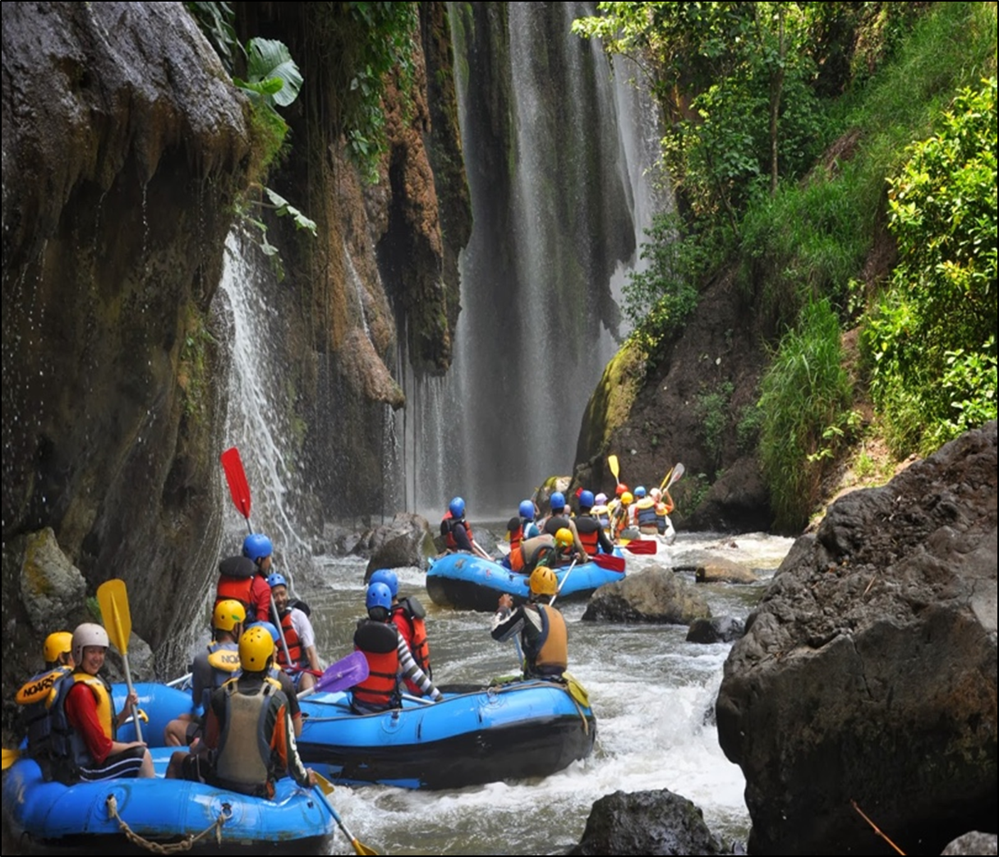
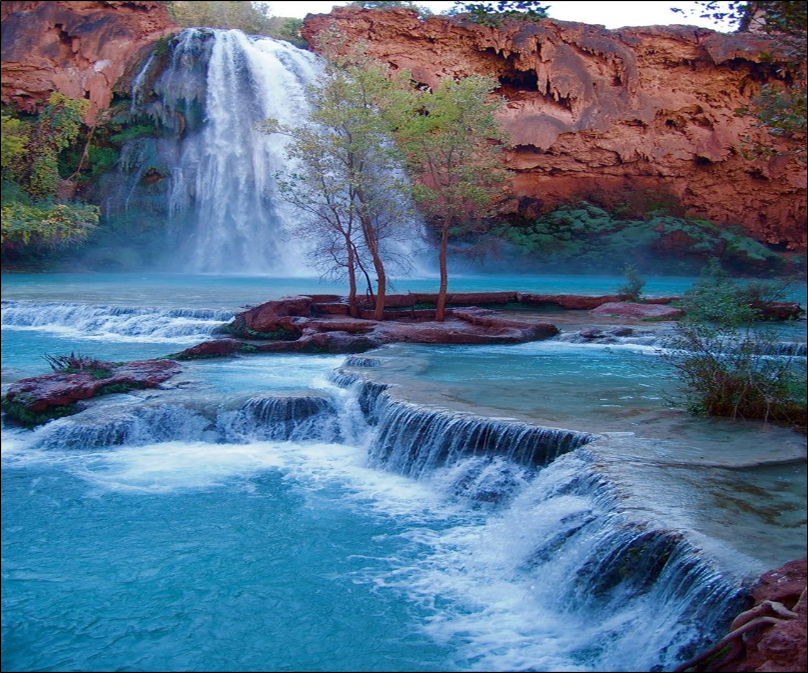

RIVERS
Yellowstone, Montana Gallatin River ( Class I - I I I )
Welcome to one of the premier river rafting destinations in the west! The Gallatin offers you
the
chance to view incredible scenery and paddle through some fun, challenging, and continuous
whitewater. We offer different stretches of river for a variety of skill levels. Depending on
your
expectations, correctly timing your trip can be the most important factor. Do you want to raft
the
infamous, class IV Mad Mile? The water is highest early in the season, then tapers off as the
summer
progresses.
Looking for a mellower ride? Check out the upper Gallatin any time or the Lower Gallatin later in the summer. Our Gallatin River office is located on Highway 191 between Bozeman and Big Sky, north of West Yellowstone. This is where you will meet for our Gallatin or Madison River Trips.

Looking for a mellower ride? Check out the upper Gallatin any time or the Lower Gallatin later in the summer. Our Gallatin River office is located on Highway 191 between Bozeman and Big Sky, north of West Yellowstone. This is where you will meet for our Gallatin or Madison River Trips.
Grand Canyon, Arizona ( Class I - V )
The Colorado River runs for 278 miles, and flows through the most spectacular canyon on earth.
Along
the journey, the river encounters famous stretches of whitewater, beautiful side canyons, and
incredible views around every turn. Many adventurers consider their Grand Canyon rafting tour
the
adventure of a lifetime.
There are a wide variety of trips to fit any schedule and group. Calm - moderate for families .... Moderate to crazy wild for the fearless and trips fun from 2 day to week long trips. Rafters must hike into the Grand Canyon to reach the river. (different start points depending on which trip you choose. You then raft through the heart of the Grand Canyon. Ride the biggest Grand Canyon Rapids. The trip ends with a hike back to the rim of the canyon. This trip offers plenty of time for hiking and exploring and enjoying the company of other rafters in the campsites at night.

There are a wide variety of trips to fit any schedule and group. Calm - moderate for families .... Moderate to crazy wild for the fearless and trips fun from 2 day to week long trips. Rafters must hike into the Grand Canyon to reach the river. (different start points depending on which trip you choose. You then raft through the heart of the Grand Canyon. Ride the biggest Grand Canyon Rapids. The trip ends with a hike back to the rim of the canyon. This trip offers plenty of time for hiking and exploring and enjoying the company of other rafters in the campsites at night.
Pick a trip and let's get rafting!
Okay, so as you can see, we have a pretty large variety of trips to fit any skill level, any price level, and any time level. We invite you to come and check us out. You will have the time of your life and make memories that will last forever. I guarantee you that you will have a great time and will probably want to take another trip after you raft with us.